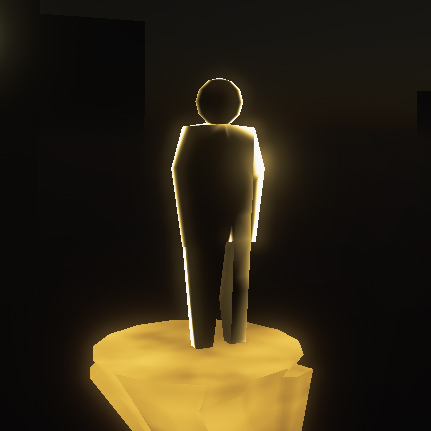
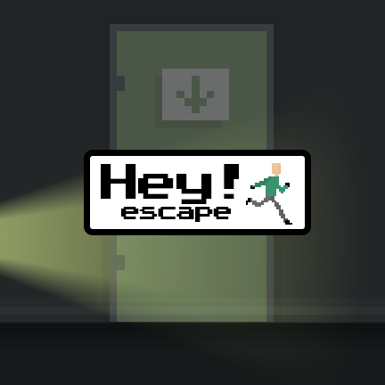

Привет,
меня зовут Максим Сластин.
Я разработчик компьютерных и мобильных игр, а также веб-приложений и сайтов.
Сластин Максим Владимирович
Дата рождения: 10.03.1995 г.
Гражданство: Россия
Благовещенск, Амурская область
Желаемая должность: Unity-разработчик (Junior)
Желаемый уровень дохода: 40 тыс. рублей
Контактная информация:
E-mail:maxnitals@yandex.ru
Telegram:https://t.me/kleeeeeer
Vk:https://vk.com/maxnitals
Участвовать в разработке игр, которые приносят удовольствие людям - моя страсть. Делать это в хорошей команде ещё интереснее. Поэтому, если у вас есть предложения по работе или вы просто хотите задать вопрос - отправляйте сообщение на мой ящик maxnitals@yandex.ru или телеграм https://t.me/kleeeeeer
Бэкграунд
После получения высшего образования по специальности "Программирование в дизайне", я работал веб-программистом. Помимо настройки серверов и написания бэкэнд кода были и более интересные задачи, как например разработка корпоративных приложений для учёта действий компании или различные плагины для синхронизации систем. Было интересно, но с самого детства мне хотелось научиться делать игры. Поэтому, после многочисленных обучающих курсов и кучи перечитанных книг, я взял курс на геймдев.
Основные навыки:
- Владение языками C#, PHP, JS, C++, HTML5, CSS/SASS
- Опыт работы с Unity, Xamarin, DOTS, Laravel, Vue
- Git, Trello, Npm, Composer, Adobe Photoshop, FL Studio
Иностранные языки:
- Английский (На уровне чтения документации)
Опыт работы:
Ноябрь 2019 — Настоящее время
Участие в геймджемах и разработка собственных проектов (Примеры ниже)
ООО "Альматрос"
Март 2017 — Ноябрь 2019
Разработка веб-приложений, поддержка клиентских проектов, разработка различных решений на клиентских проектах, разработка решений для автоматизации внутренних операций в компании.
Рекомендация с места работы: Файл
ООО "Инифинитум групп"
Сентябрь 2016 — Январь 2017
Разработка телеграм-ботов, доработка клиентских проектов, исправление ошибок в работе клиентских проектов, разработка узко-направленных плагинов.
Образование:
Амурский Государственный Университет
Дневная/Очная форма, 2016
Факультет: Математики и Информатики.
Специальность: Прикладная информатика в дизайне.
Навыки
| Языки | Движки/Фреймворки | Инструменты |
|---|---|---|
| C# | Unity | Git |
| PHP | DOTS | Npm |
| JS | Xamarin | Composer |
| C++ | Laravel | Trello |
| HTML5 | Vue | FL Studio |
| CSS/SASS | Adobe Photoshop |
Геймджемы
Mind Escape
Unity, C#
Игра на геймджем "Народный геймджем". Тема джема была "Изоляция". Игра получила второе место в номинации "Визуальный минимализм" а также высокую оценку в номинации "Игра с лучшим исходным кодом на движке Unity".


Личные проекты
Hey!Escape
Unity, C#
Платформер с элементами Stealth механик. Ваша задача - сбежать из здания злодеев, пройдя каждый этаж, не попавшись на глаза врагам. Один взгляд в вашу сторону и вы начнёте сначала.


Rate Anything
Xamarin, C#
Приложение позволяет вести списки вещей, которые вы хотите оценить друг с другом. Например, вы можете забыть, насколько хорошим или плохим было кафе, в котором вы были полгода назад. Или какой из сотен сыров вы предпочитаете. В «Rate Anything» вы можете создавать любые списки и сортировать их по указанному вами рейтингу или дате создания.

 Namine
Namine
Opencart, JS
Скрипт, созданный для упрощения написания модификаций OpenCart. Он собирает все части модификаций из файлов кода сайта и соединяет их в отдельный установочный файл.
Контакты
E-mail: maxnitals@yandex.ru
Telegram: https://t.me/kleeeeeer
Github: https://github.com/KLEEEEEER
Itch.io: https://maxnitals.itch.io/
Ссылка на эту страницу
О себе:
Люблю игры, люблю делать игры, поэтому увлекаюсь также многими смежными областями: 3д моделирование, анимация, создание музыки, видеомонтаж. Могу уверенно назвать себя трудолюбивым и ответственным человеком.
Участие в проектах:
Mind Escape (Народный джем)
Unity / C#
Второе место в номинации "Визуальный минимализм"

Devoured (Ludum Dare 47)
Unity / C#
Игра сделана в команде из 5 человек. Победа в номинации "гейм-дизайн" на Digital Media Art Fest
Hey!Escape
Unity / C#
Личный проект. Всегда хотел попробовать сделать 2D Stealth платформер.